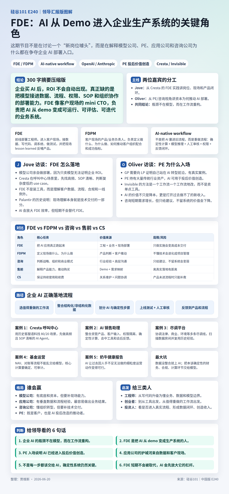

播客整理
E240：FDE、模型公司部署与 PE 入场
围绕 FDE、FDPM、AI-native workflow、模型公司部署、PE 入场和企业 AI 落地案例，整理文字总结、图片总结和行业判断。
300 字执行摘要
这期内容讨论的是 AI 企业落地中突然走红的职位：FDE，Forward Deployment Engineer，前线部署工程师。它之所以火，是因为 OpenAI、Anthropic、Google 等模型公司都意识到：企业真正需要的不是一个聊天机器人，也不只是 API，而是一套能嵌进真实业务的 AI-native workflow。FDE 的本质是把 AI 从“模型能力”变成“业务结果”。它深入客户现场，理解流程、数据、系统、组织约束，然后把 AI agent 或 AI 工作流真正部署起来。内容里还提到一个配套角色：FDPM，Forward Deployed Product Manager，前线部署产品经理。如果说 FDE 像“小 CTO”，负责技术实现、系统集成和上线质量；FDPM 则像“小 CEO”，负责客户需求、产品行为、项目推进和业务结果。核心判断是：AI 落地的竞争，正在从“谁的模型更强”转向“谁更能把 AI 改造成企业 workflow”。
关键概念：FDE / FDPM / AI-native workflow
FDE
Forward Deployment Engineer，前线部署工程师。它不是普通实施工程师，也不是售前工程师，而是一种贴近客户现场的工程角色，要同时承担工程、产品、客户理解和业务落地。
FDE 负责识别适合先做的 use case，分析客户历史数据和真实流程，接入客户 API、内网系统、数据库和业务工具，开发、测试、部署 AI agent，并完成 UAT、灰度发布、监控和优化。项目结束后，它还要把经验沉淀回产品、SDK、CLI 或内部 skill。
一句话：FDE 负责让 AI 真正在客户业务里跑起来。
FDPM
Forward Deployed Product Manager，前线部署产品经理。它是 FDE 模式里非常关键但更容易被忽略的角色，不一定写很多代码，但要把客户模糊的业务问题变成可执行、可测试、可验收的 AI 产品行为。
FDPM 负责和客户建立信任，明确业务目标、KPI 和上线标准，设计 agent 应该说什么、不该说什么，创建测试集和验收标准，管理客户预期和项目风险，推动客户内部对齐，并识别扩展 use case 和 upsell 机会。
播客里的比喻很准确：FDE 像 CTO，FDPM 像 CEO。
AI-native workflow
AI-native workflow 不是在旧流程上加一个 AI 工具，而是重新拆解工作流：哪些步骤必须确定性执行，哪些步骤适合 AI 判断或生成，哪些步骤需要人工审核，哪些数据必须先整合，哪些结果能衡量 ROI。
它的重点不是“全部 AI 化”，而是正确安排 AI、代码、规则、数据和人。一个优秀工作流，通常同时包含确定性计算、模型推理、人工审核、权限控制和反馈闭环。
部署公司
Deployment Company 的逻辑是：模型公司不能只等客户自己探索 ROI，而要主动进入企业场景，帮助客户把 AI 从 demo 变成可衡量的业务结果。
播客结构总览
节目大致分三段。第一段是 Jove 的访谈。Jove 来自 Cresta，负责 FDE 团队，主要讲 FDE 的定义、工作方式、Palantir 渊源、FDE/FDPM 分工、招聘标准，以及这个职位是否会长期存在。
第二段是 Oliver 的访谈。Oliver 是 Invisible Technologies 企业业务 VP，之前在麦肯锡做 PE 咨询，主要讲 AI 落地、私募股权为什么参与、AI 对 PE 和咨询行业的影响，以及企业自动化工作流案例。
第三段回到 Jove，讨论未来市场格局：模型公司、应用层公司、咨询公司、PE 都在进入 AI 部署市场，但各自优势不同。
- 01:57-04:30：OpenAI DeployCo、Anthropic 合资企业与模型公司部署服务。
- 04:30-12:43：FDE 定义、Cresta 呼叫中心案例、应用层数据优势。
- 12:43-22:47：Palantir 渊源、FDE / FDPM 分工、FDE 人才画像。
- 22:47-26:10：FDE 是否会被 AI 取代，为什么它仍有长期价值。
- 26:10-36:04：PE 为什么和模型公司合作，LP/GP 的 AI 转型压力。
- 36:04-46:19：AI 销售助理、尽调平台、基金运营、数据整合与落地坑点。
- 46:19-51:24：模型公司、应用公司、咨询公司和 FDE 市场会如何分化。
Jove 访谈详解
FDE 为什么重要
Jove 的核心观点是：模型公司终于意识到，模型本身不是产品。企业真正要的是能改变业务的东西，而不是一个聪明的模型。OpenAI、Anthropic、Google 等模型公司开始亲自做部署，说明它们意识到“把模型交给客户自己探索”不足以完成企业化。
企业内部有大量模型无法单独解决的问题：数据不完整、不干净、不可共享；API 千奇百怪，甚至在内网；SOP 不清晰；业务人员说不清真实需求；合规、安全、权限要求复杂；上线后还要监控、调优并负责结果。FDE 的作用，就是吸收这些复杂性，把它变成一个客户能用、能上线、能衡量价值的系统。
Cresta 的例子是客服场景。它们积累了大量 human-to-human 的客服对话数据，所以可以分析哪些 use case 量大、流程清晰、判断不复杂，然后优先做 AI agent。FDE 会基于历史数据抽象用户问题、客服回答方式、测试案例，再和客户共创、上线、优化。
Palantir 渊源与现场能力
FDE 模式最早来自 Palantir。Palantir 服务军方、政府和复杂企业客户时，标准化软件很难直接满足需求，必须有人深入现场理解数据、流程和决策逻辑。
Palantir 早期有偏技术和偏业务/领域的团队，后来形成 FDE 这种模式。今天 AI 公司重新重视 FDE，是因为 AI agent 的落地也高度依赖现场 context。不同的是，现在 AI coding 和 agent 工具更强，FDE 可以更快把项目经验变成代码、工具、脚本和内部 skill，从而形成规模效应。
人才画像与长期性
Jove 对 FDE 的要求很高。他不招 junior FDE，因为一个项目往往只有少数几个人直接面对客户 CTO 或业务负责人，太 junior 很难建立信任。优秀 FDE 需要是合格甚至优秀的工程师，开发和测试过 AI agent，会使用 AI coding 工具，但不只是“会用 Cursor”。
更重要的是，FDE 要能和客户高层、IT、业务人员沟通，能从模糊问题里抽象出具体需求，能 say no，管理不切实际的期待，面对混乱 API、糟糕文档、不完整 SOP 时仍能推进。Jove 特别喜欢 founder、founding engineer、做过咨询或大量 customer-facing 工作的人。因为 FDE 很像创业训练营：你面对真实客户、真实混乱、真实结果。
FDE 的工作流程
FDE 不是一直待在客户现场。Jove 说，他们通常会在项目启动时去客户办公室，两三天集中开会，把 high-level goal、KPI、API 验证、初步 POC 定下来。之后大部分开发远程完成，但会保持每周甚至每天沟通。到 UAT、验收、扩展 use case 时，可能再次面对面。
- 售前阶段：做更完整的 demo 或 POC，验证客户是否真的有可落地场景。
- 售中阶段：明确 use case、KPI、技术可行性、API 边界和组织责任人。
- 上线阶段：开发、调试、灰度、监控，处理真实数据和真实用户的例外情况。
- 上线后：看客户满意度、电话时长、case resolve 等指标，判断是否达标。
- 达标后：FDE 退出，后续小改由其他团队维护，并把重复经验沉淀为工具。
一个典型项目周期通常是两到四个月。FDE 不是长期外包人力，而是负责把复杂落地阶段推过去，让 AI 系统从 POC 进入生产。
FDPM 详解：为什么不能只靠 FDE
Jove 提到，理想情况下，一个人什么都会：懂客户、懂产品、懂工程、懂销售、懂 AI。但这种人太少，很难规模化。所以 Cresta 把角色拆成 FDE 和 FDPM。
FDE 更专注技术，包括 agent 架构、prompt 和工具调用、API 接入、测试框架、安全和稳定性，以及把重复工作沉淀成 SDK、CLI、内部工具。
FDPM 更专注客户和产品行为，包括客户到底想解决什么，agent 应该如何回应，哪些回答风险太高，测试集怎么设计，什么质量算过关，项目风险如何升级，以及如何推动客户接受新流程。
传统 PM 更像在公司内部定义产品路线，FDPM 则更贴近客户现场；传统 Customer Success 更偏续约和满意度，FDPM 则要定义 agent 行为和 workflow；传统咨询顾问偏建议，FDPM 要把建议转成可交付系统。播客中提到的配置大约是：1 个 FDPM 配 2 到 3 个 FDE。FDPM 可以覆盖多个项目，FDE 会按技术领域或行业经验逐渐专业化。
Oliver 访谈详解
企业 AI 为什么难
Oliver 的核心观点是：个人 AI 工具很成功，但企业 AI 采用率很低。原因是大部分工具没有改变 workflow，只是在旧流程上做增强。真正的 AI 落地，要从 workflow 切入，而不是从工具切入。
比如一个十步流程，五步可能必须确定性执行，因为涉及数学、合规、财务；三四步可以用 AI，因为涉及语言、判断、生成、总结；一两步需要人工审核，保证风险可控。这才是企业 AI 的正确形态。每家公司流程不同，所以必须定制化。
Invisible 的方法：一个工作流一个工作流改
Oliver 认为，市场上很多 AI 工具只是增强旧流程，没有改变做事方式。Invisible 的方法不是一个工具一个工具地上，而是一个工作流一个工作流地切入。它会把流程拆开：哪些步骤必须确定性执行，哪些步骤可以用 AI，哪些步骤需要人工审核。
这个框架很关键。企业 AI 不是“把所有步骤交给模型”，而是把确定性系统、模型推理、人工审核和反馈闭环组合起来。比如一个十步工作流里，可能五步是确定性的，三四步适合 AI，最后一两步需要人工确认。
PE 为什么参与这波 AI 部署
Oliver 总结了 PE 的三个诉求。第一是信号价值。LP 现在会问 GP：你有没有真正用 AI 创造价值？所以和 OpenAI、Anthropic 合作，是向 LP 证明自己站在 AI 前沿。
第二是 portfolio value creation。PE 手里有大量传统企业、医疗、工业、商业服务和软件公司。AI 如果改造 workflow，可以直接提升效率、收入和估值。第三是投资回报。这类合作本身让 PE 接触高增长 AI 资产，有财务吸引力。
PE 自身也会被 AI 改造
过去 PE 常见打法是 roll-up、整合、降本、提高运营效率。AI 时代出现一种新打法：买下传统公司后，重构它的工作流，把它改造成 AI-native 公司。
这意味着 PE 买的不只是公司，也是在买行业流程、数据和 know-how。AI 可以把这些原本低技术含量的业务重新包装成高效率、高收入能力的资产。但 Oliver 也提醒，想象和现实差距很大。真正落地需要数据、流程、系统、组织共同改变。
咨询行业不会马上消失
Oliver 的判断是：未来三到五年，咨询需求反而会上升。因为企业需要重新思考商业模式、收费方式、组织结构和激励机制。例如律师事务所以前按小时收费，如果 AI 大幅减少工时，就可能转向按结果收费。这不是装工具，而是商业模式重构。
但长期看，价值会流向能真正留下系统的人。只做建议的咨询不够，能部署并改造业务的公司会拿到更大价值。AI 实验室、应用公司、咨询公司都会争夺这个市场，胜负不在于谁讲得更好，而在于谁能真正让客户的工作流变成新的生产系统。
FDE vs FDPM vs 咨询 vs 售前 vs CS
| 角色 | 核心任务 | 价值来源 | 风险 |
|---|---|---|---|
| FDE | 进入客户现场，把 AI 应用真正跑起来，并反哺产品。 | 工程能力 + 业务理解 + 现场部署。 | 如果只做实施，会沦为高成本交付。 |
| FDPM | 定义客户现场做什么、为什么做、怎么推动组织配合。 | 产品判断 + 客户管理 + 成功指标定义。 | 如果不懂技术，容易变成普通项目管理。 |
| 咨询 | 帮助企业判断战略、组织、商业模式和流程改造方向。 | 行业经验 + 高层沟通 + 转型方法论。 | 只给建议、不留下系统，价值会被压缩。 |
| 售前 | 解释产品能力，帮助客户完成购买决策。 | 产品展示 + 需求映射 + 商务推进。 | 容易停留在 demo 和承诺，离真实落地有距离。 |
| CS | 客户成功，保证产品被持续使用并扩大续费。 | 关系维护 + 使用率提升 + 问题协调。 | 如果产品没有真正进入流程，CS 只能做补救。 |
FDE 与其他角色的最大区别是：它既不只负责卖，也不只负责建议，更不只负责维护。它要在客户现场把 AI 变成能运行、能评估、能持续迭代的生产系统。
案例拆解
Cresta 呼叫中心
原痛点：大型企业客服量大，但不同 use case 复杂度不同，AI 不能一上来全覆盖。
改造方式：先找高频、SOP 清晰、人工判断少的场景；用历史客服对话分析用户问题和解决路径；训练或模拟 agent；上线后看满意度、电话时长、解决率等指标。
价值：用较低风险的 use case 先证明 ROI，再逐步扩展。
AI 销售助理
原痛点：大资管想通过小资管渠道卖产品，但如果每次客户会议都配销售经理，成本太高。
改造方式：整合约一千款产品数据；接收客户信息；用确定性计算生成产品组合；AI 生成销售话术和会前材料；会中辅助；会后根据记录更新方案。
价值：让大资管服务原本覆盖不了的客户群，不只是降本，而是打开新收入。
尽调平台
原痛点：PE 尽调要协调法律、商业、环境等多条工作线，投资团队压力大，文档输出耗时。
改造方式：搭平台连接顾问和投资团队；自动扫描 data room；追踪顾问进度；调用历史相似项目的问题和经验；自动生成最终文件。
价值：减少协调成本，复用机构知识，提高尽调效率。
基金运营自动化
原痛点：净资产值计算、账户对账等流程频繁、耗时，但需要高确定性。
改造方式：用 AI 梳理流程和异常处理，但关键计算用确定性系统执行。
价值：减少重复劳动，同时避免把财务确定性任务交给大模型。
奶牛健康报告
原痛点：公司想给所有账户或农场生成报告，但人力不够。
改造方式：整合数据，生成定制 AI 健康报告，让员工把更多时间放在维护奶牛健康上。
价值：做过去因为人力不足而做不了的事。
Palantir 现场部署
军方和政府客户需求高度复杂，必须深入现场理解数据和任务。FDE 模式从这里长出来，说明现场理解本身就是技术交付的一部分。
常见误区
以为有模型就能落地
现实是，没有数据整合、权限管理、系统接入和流程设计，模型没有用武之地。企业落地难点通常不在“模型会不会回答”，而在模型能不能安全、稳定、可衡量地进入生产流程。
什么都想 AI 化
财务计算、对账、合规判断等确定性任务不应该交给大模型。AI 应该用在适合模糊判断、语言生成、信息整合和流程协调的地方。
只盯着降本
Oliver 认为 AI 更大的价值是创造收入。关键问题不是“省掉多少人”，而是“如果你突然拥有一万个受过教育的员工，你会做哪些过去做不了的事？”
行业格局
这个市场不会只由一种玩家通吃。模型公司、应用公司、咨询公司、PE 和企业内部团队都会参与，但它们的优势不同。
- 模型公司：OpenAI、Anthropic、Google，有模型和资本，但可能偏向自家生态，需要补客户现场能力。
- 应用层公司：如 Cresta，更懂具体场景，可以自由组合不同模型，优势在于“卖 outcome，不卖 token”。
- 咨询公司：擅长高层沟通和商业模式重构，但需要加强交付能力，否则容易停留在建议层。
- PE：用资本和投后管理推动 portfolio AI 化，既是客户，也是重要分发和改造通道。
- 外包/实施公司：会被迫升级，否则容易被 AI-native 部署公司挤压。
- 企业内部团队：最终要接住新系统。外部 FDE 可以启动转型，但长期能力必须沉淀到企业内部。
Jove 认为应用层公司的优势在于“卖 outcome，不卖 token”。它们可以在一个 conversation 里调用多个模型，按成本、效果、合规、稳定性选择最合适的组合。真正的竞争焦点不是谁的 demo 更漂亮，而是谁能把 AI 嵌进客户的真实工作方式，并留下可持续运行的系统。
对工程师 / 创业者 / 投资人的启发
工程师
只会写代码不够。未来高价值工程师要能理解业务流程、数据质量、客户限制和模型边界。FDE 是工程师通往产品、业务和创业的一条训练路径。
创业者
不要从“我有一个 AI 工具”开始，而要从“哪个工作流值得重做”开始。最好的机会在脏数据、老流程、强合规和高人力成本的地方。
投资人
判断 AI 公司不能只看模型包装，要看它是否进入真实工作流，是否有数据闭环，是否能创造收入，而不是只讲降本。
企业管理者
先做数据和流程拆解，再做模型接入。不要把确定性环节交给 AI，也不要期待一个横向工具自动完成组织转型。
金句和核心判断
- FDE 像客户现场的 mini CTO：不是展示 AI，而是把 AI 跑起来。
- FDPM 像客户现场的 mini CEO：不是排期，而是定义业务结果和产品行为。
- 企业真正需要的不是 AI 工具，而是 AI-native workflow。
- 模型公司做部署，是因为只卖模型无法自动证明企业 ROI。
- 应用层公司的壁垒不是模型本身，而是行业数据、现场经验和产品反馈闭环。
- AI 落地的第一步不是 prompt，而是数据整合和流程拆解。
- 不是每一步都该交给 AI。确定性计算、合规和财务流程仍要可审计。
- PE 关注 AI，不只是为了降本，也是为了向 LP 证明自己能创造新价值。
- 咨询不会马上消失，但只给建议、不留下系统的咨询会越来越弱。
- FDE 短期不会被 AI 取代，AI 会先把 FDE 的杠杆放大。
- 如果有一天 FDE 也能 99% AI 化，那被重写的就不只是一个岗位，而是整个企业协作方式。
最后的结论是：AI 企业化已经从“工具采用”进入“工作流重构”。FDE 和 FDPM 的出现，说明 AI 落地需要一种新组织形态：FDE 把复杂技术问题解决掉，FDPM 把客户需求和产品行为定义清楚，两者一起深入业务现场，把模型能力转成业务结果。未来真正有竞争力的公司，不一定只是模型最强，而是最懂如何把 AI 嵌进客户真实 workflow 的公司。
图片总结
这张图保留为快速扫读版本，适合在手机上先抓主线，再回到正文看详细报告。
